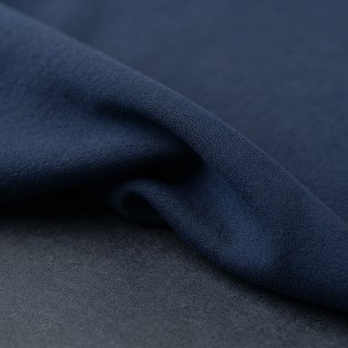
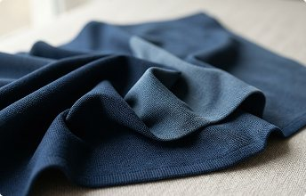
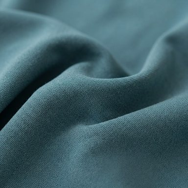
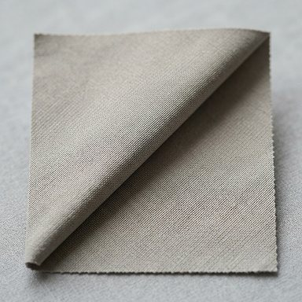
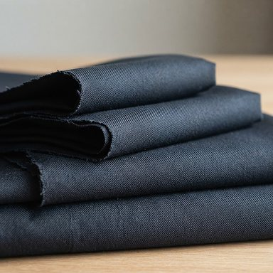
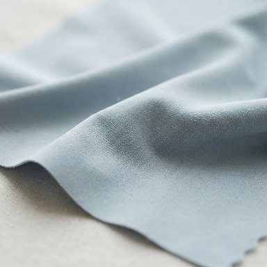
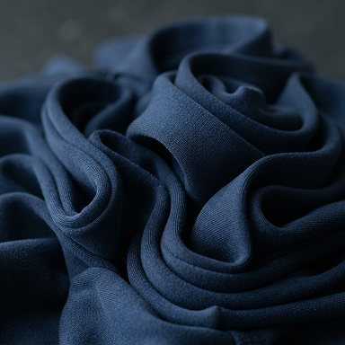

PNC-FAB-001
Nylon Flex Knit
80% Nylon / 20% Elastane180 GSM · 150 cmActivewear · Leggings
Home / Fabric Library / Nylon Performance
Explore nylon-led stretch knits and wovens for swimwear, performance sportswear and everyday trousers. Choose by composition, weight and intended garment, then enquire about the right specification for your project.
Request Quote

PNC-FAB-001

PNC-FAB-002

PNC-FAB-003

PNC-FAB-004

PNC-FAB-005

PNC-FAB-006
Start with what you’re making. Composition, weight and stretch help narrow the options.
For close-fitting swimwear and sportswear, start with stretch knits. For golf, office and travel trousers, consider woven options with the weight and hand feel your garment needs. Ask about samples to assess suitability before production.
Share your application, fabric preferences and quantity. We’ll help define the next step.